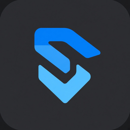
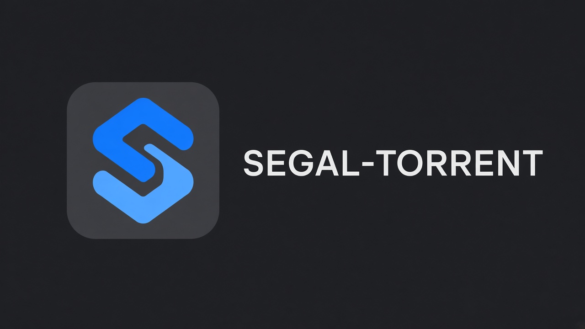

Один файл
Скачали exe и запустили. Установщик не нужен.

SEGAL-TORRENTПростой и быстрый клиент для Windows. Открывает .torrent и magnet, показывает прогресс, говорит по-русски и по-английски. Регистрация не нужна.
SEGAL-TORRENT.exe · 49.9 MB · Windows 10/11 · файл в репозитории

Скачали exe и запустили. Установщик не нужен.
Интерфейс на русском и английском, переключается в окне.
Тёмная и светлая, в цветах знакомой среды разработки.
Скорость, пиры, сиды, трекеры и список файлов.
Следующий торрент предлагается сохранить туда же.
Можно сделать программой по умолчанию для .torrent и magnet.